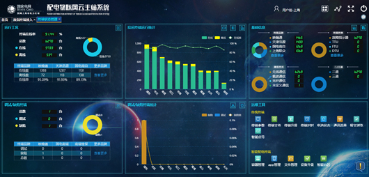
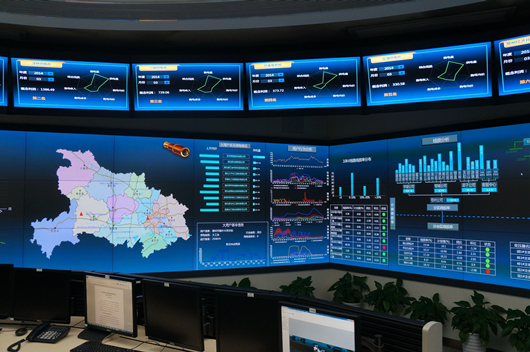

建设泛在电力物联网的探索与实践：云主站让电网更高效更智能
发布时间：2019-09-05 大中小
北极星智能电网在线讯:今年以来，公司各单位认真贯彻落实“三型两网、世界一流”战略部署，积极推进泛在电力物联网建设，不断在大数据应用、智慧能源服务等方面创新实践，取得了积极成效。
云主站，让电网更高效更智能
大数据正在改变传统行业生态，电力行业也不例外。对电力数据的大规模采集和系统性分析，可以优化电力生产、传输、消费等各环节，实时监控电网运行，预判故障风险，优化运维抢修流程。
然而，传统运维模式下的智能电网配电自动化主站，仅能实现对输变电设备本身的运维管理。随着海量数据的接入，传统的主站架构已经不能满足电网安全可靠、灵活高效的更高要求。
某种意义上说，移动互联加速了大数据进程，而大数据又推动了云计算的发展。当与人们生活息息相关的配电网遇到“云”，会带来哪些变化呢？
5月28日，国网上海市电力公司建成国内首个配电物联网云主站。这是应用物联网技术对智能电网配电自动化主站的一次升级。
“如果将配电物联网比作人体的中枢神经系统，那配电物联网云主站就是我们的大脑。”配电物联网云主站研发负责人陈冉博士说。
云化后的配电物联网主站，接入了为上海居民和企业提供用电保障的17858座中低压配电站、123989台公变台区、1065.3万户低压客户，还有各类分布式电源、充电桩等。它产生的数据不再限于输电线路和变电站等电网设备，而是囊括各类智能终端的物联感知数据。这些每秒以亿为单位更新的感知数据，与检修、营销和调控专业相关系统的信息交互，实现全面汇集、分层处理。
6月27日10时，上海浦东供电公司员工宫黛在办公室的电脑上打开云主站，与此同时，同事唐力在豪园张江配电站用手持终端扫描配电变压器、智能配变终端的设备标签。5秒钟后，宫黛在云主站看到唐力扫描的终端完成注册与配置，关联设备的相应信息也出现了。
数据采集后，最重要的是分析。对电力数据深入分析应用，不仅能提高电网的运营效率和水平，更能与宏观经济、人民生活、社会保障、道路交通等信息融合，促进经济社会发展。目前，云主站已经具备了物联数据初级研判能力，可为配网运检信息全过程管理提供切实可行的解决方案。
目前，云主站已经具备基础电气数据采集、环境状态采集、动态拓扑识别、低压故障研判、电能质量监测、自动无功补偿、停复电信息上报等功能。
值得一提的是智能配变终端的即插即用功能。以中等大小的台区为例，每个台区有1000多个变量，以前的自动化控制系统需要为各项设备提前配置点表，记录每个变量的使用情况，一名员工每天最多完成一两个台区的点表配置。而不同台区的智能配变终端顺序和内容不同，每个台区都要单独配置，并在现场接入时逐一调试、核对。智能配变终端即插即用，让主站侧不需要再配置点表，使设备接入时间从4小时缩短到5分钟。
应用边缘计算，主动感知信息。5月30日18时，上海浦东古桐六村一台户外10千伏箱变低压出线线路开关跳闸，18时01分，抢修人员贺永明的手机接到通知，18时27分，故障消除。
故障发生时，安装在箱变台区侧的智能配变终端记录了这一跳闸事件，并实时上报至云主站系统。云主站系统第一时间将故障对应生成的抢修工单在线发给了抢修人员的手持终端。抢修人员接到工单后，根据故障台区名和线路名称找到故障点并处置。从发现跳闸到解决问题一共不到30分钟，极大缩减了故障处理时间。这主要来自对故障信息的迅速掌握，依靠的是边缘计算。因为靠近数据源，实时性好，响应快，安全性高，边缘计算成为泛在电力物联网感知层的核心技术。
在泛在电力物联网场景下，依靠电网中数量庞大的智能配变终端，通过云主站计算分析+本地边缘计算结合的方式，可以组合分析“配变台区-电缆箱-电表箱-低压客户”检测数据，实现对故障区段、停电客户的自动研判和快速定位，甚至可以组合分析各种设备状态数据、环境监测数据以及客户用电数据，实现配网故障提前预警。
云主站建成的当天，同处一室的泛在电力物联网智能感知装置性能检测系统转入试运行模式。感知装置性能检测系统与配电物联网云化主站的集成发展，将进一步助推配用电设备的广泛连接交互、信息深度采集与数据融合分析。
配电物联网云主站的建设刚刚开始。随着5G的商用，国网上海电力将依托5G应用平台，积极推进智能分布式配电自动化、精准负荷控制、配网同步相量测量单元、分布式能源控制、用电信息采集、移动作业等5G创新应用研究及示范。
电力物联网助天津华丽转身
8月14日，天津市政府与国家电网有限公司在津签署的《加快实施“三型两网” 建设“五个现代化天津” 推进京津冀协同发展战略合作框架协议》，成为公司与地方政府签署的第一份关于“三型两网”建设的框架协议。
建设智慧城市、打造能源革命先锋城市是天津市的目标，也是一项复杂的系统工程。在公司“三型两网、世界一流”战略目标指引下，国网天津市电力公司以此为机遇，全力服务“五个现代化天津”建设，推进泛在电力物联网建设，强健城市运行的神经系统，致力于城市的华丽转身。
入夜时分，海河两岸五光十色的灯光将这座城市装点得分外靓丽，一排排路灯默默守护着城市的夜晚。
位于王串场一号路和华昌大街路口的一基路灯杆看似普通，却有“眼”能看，开“口”会讲。
“您好！您已处于积水较深区域，前方水深25厘米，请您注意出行安全。”一场暴雨降临后，当路人行走到低洼积水地段前，就会听到头顶上的路灯传来这样的提示音。
原来，这基路灯杆安装了一个智慧灯头，集成了监控摄像头和语音广播功能，配合安装在杆体中部的水位监测装置，一旦积水深度超过设定值，监控摄像头探测到有人进入低洼区域，就会向后台发送告警，工作人员可通过广播远程提醒行人。
监控摄像、水位传感、语音广播等设备智能联动，使路灯成为智慧城市的“眼”和“嘴”，为百姓提供了更多的服务。
泛在电力物联网为智慧城市建设提供了无限可能。天津电科院计量中心技术人员刘浩宇正在实验室应用新型智能电表，模拟检测家用电器的分项用电能耗情况。国网天津电力依托天津重点实验室中的高级量测试验单元，围绕泛在电力物联网，研制出了首款具备智能负荷辨识功能的新一代智能电表。
“这款新型智能电表在外观上与常规电表无异。负荷辨识、状态监测、停复电上报等三大功能通过模块化设计，内嵌于电表基表之中，可快速便捷换装，为客户带来安全高效的智慧用电体验。”天津电力工作人员介绍说，通过采用“云端+边缘计算”技术，这块电表不仅能准确“识别”家用电器，还可实时采集家庭用电负荷种类及各种电器消耗分电量信息，通过精细化用电数据监测与能耗预警分析，为客户找出家中高耗能电器，提供节能指导。
目前，第一批新型智能电表已试点安装在中新天津生态城人才公寓，表计新功能运行稳定。国网天津电力计划在中新天津生态城选择700户居民客户现场安装应用，同时加快系统应用功能开发，最终构建居民侧综合能源服务解决方案，实现居民家庭负荷的精准采集与监测，为客户提供节能诊断、用电安全隐患辨识、电器评价等智慧互动增值服务。
除了面向居民客户，新型智能电表在商业客户层面也实现了成功应用。“近日，我们应用用电负荷智能感知技术，成功对一家跨国餐饮集团的餐厅开展了综合用能计量与评价服务，并出具用电量监控分析、能耗对标等用能分析报告，实现商业客户侧能源的分级分类分项计量，为企业进一步节能降耗提供帮助。”天津电科院计量中心技术人员董得龙说。
囯网天津电力将面向更多大型连锁餐饮、商业活动中心等商业客户推广新型智能电表，开展用能监测、行为分析、节能指导等用电服务，在客户端直观展示能源计量数据，实现数据变现，为更多企业开展节能工作提供数据分析支持。
让万物互联，感受智慧能源新体验
“用电信息采集成功率99.3%，王畈村1号台区线损出现异常波动……”8月20日，湖北孝感安陆市供电公司雷公供电所所长毛勇登录“班组透视窗”管理平台，仅用10分钟，就得到了一份详细的分析报告。平台对30多套业务系统、140多项考核指标进行了自动查询和智能分析，共监测到11个异动问题。雷公供电所所长程志兵根据这份分析报告，迅速拟出了当天的重点工作任务工单，并开展专项检查。
今年，国网湖北省电力有限公司整合各专业信息化系统，打通30多套关键业务系统间的信息壁垒，实现运行、检修、营销等跨专业数据融合，形成统一数据资产。在此基础上，该公司为供电所提供了高效快捷的数字化管理平台——“班组透视窗”。
“班组透视窗”减轻了基层班组的供电服务压力，提升了供电服务的响应速度。目前，湖北1049个基层供电所工作人员均能通过“班组透视窗”采集台区集中器掉线、电流、电压实时数据，主动监测和发现客户侧的用电异常和设备故障。
配电自动化让电网更智慧。配电网是连接主网、客户及各类分布式交互终端的关键环节，也是泛在电力物联网建设的主战场。目前，国网湖北电力已在13个地市建成配电自动化主站，在武汉、鄂州、宜昌、咸宁、孝感、黄石等地开始实用化应用。今年上半年，该公司共开展遥控操作627次，遥控成功率99.75%。
4月，为了深化泛在电力物联网建设，国网湖北电力在鄂州设立配电物联网示范区，从配电自动化全覆盖建设、智能配变终端应用、配电电缆智能管理及供电服务指挥系统深化应用等方面开展试点。
目前，鄂州供电公司已在主城区实现配电自动化全覆盖。该公司配电网故障查找和处理时间大幅下降，倒闸操作时间由33分钟缩短到1.5分钟，故障隔离时间由57分钟缩短到3分钟以内，并创造了13秒内自动执行故障分析、隔离和负荷转供全过程的纪录。该公司运维投诉工单同比下降40%，配网供电可靠性提升至99.96%。
按照国网湖北电力配电自动化建设应用三年目标，到2020年，全省城农网中压配电线路配电自动化覆盖将达到95%，实现配网主干线可观、可测及故障定位和隔离，部分区域实现自愈。到2025年，国网湖北电力将建成具有一定自愈能力的配电网，实现架空网和地下电缆网故障自动隔离，自动恢复供电。
10月，第七届世界军人运动会将在武汉举行。国网湖北电力将借助这次保电契机，集成PMS2.0系统、电网地理信息系统平台、供电服务指挥等业务系统，整合各类在线监测系统，构建以协同指挥、综合展示、预警预控、智能交互、任务管控等功能为核心的智能保电指挥平台。
此外，国网湖北电力着力打造智慧能源服务示范项目，为长江岸电推广、综合能源服务提供可复制、可推广的经验。
“用手机扫码，就可以用上岸电了，全年可节约成本约10万元。”6月25日，游轮“长江黄金3号”在宜昌秭归港使用岸电时，电机员陈力说。岸电正受到越来越多船主的认可和欢迎。在长江三峡坝区绿色岸电试验区，国网湖北电力大力推广应用岸电云网平台，拓展电力交易、大数据分析等增值业务，打造以岸电为基础、全产业链的立体化服务生态圈。
国网湖北电力为正在建设的鄂州机场航空都市区提供“互联网+”智慧用能方案，构建以电为优先的清洁低碳能源消费体系。项目将建成全国第一个使用江水源热泵的机场；打造“互联网+”大数据平台，实现整个机场能源系统智能化运营与管理，多能互补、高效利用。届时，机场可再生能源利用率将达到16%，每年可节约用电约3366万千瓦时，相当于减少化石能源消耗1万吨。